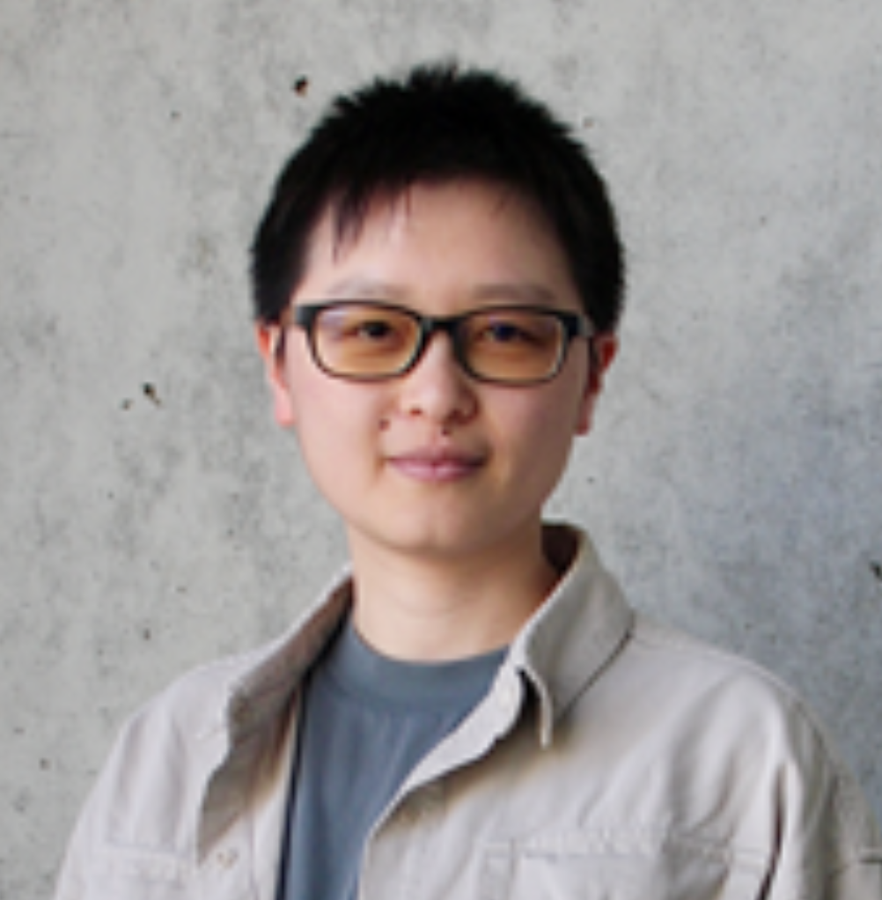
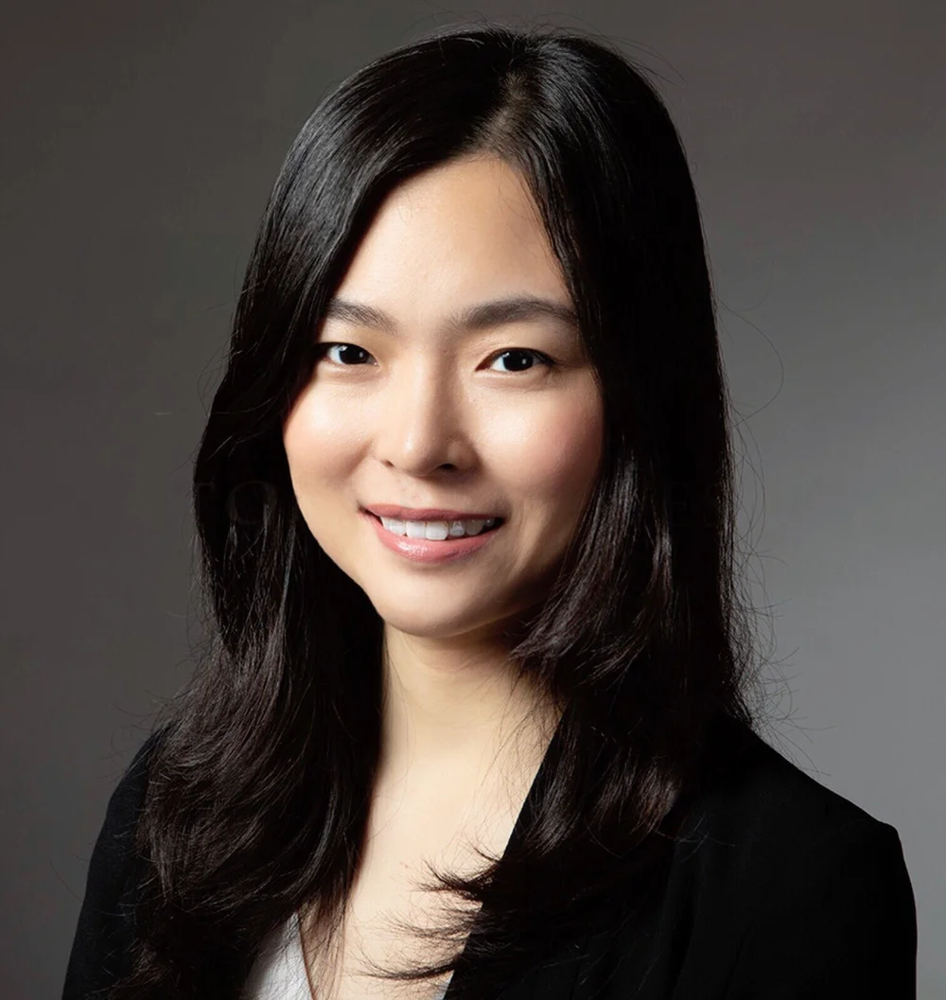

01

Keynote Speaker
Dr. Hsiu-Chuan Lin林秀娟
Centre for Genomic Regulation
Barcelona, Spain匯集國內外表觀遺傳學及基因體調控領域研究學者。
Keynote Speakers
講題與個人簡介將於確認後陸續更新。

Centre for Genomic Regulation
Barcelona, Spain
Genome Institute of Singapore, A*STAR
Singapore
Massachusetts Institute of Technology
Cambridge, USAInvited Speakers
依機構分類，並依姓氏筆畫排序；同機構講者集中呈現，名單與單位資訊以大會最終公告為準。
International Journal
Academia Sinica
Universities
依姓氏筆畫排序，姓名後列學校與單位。
October 16–17, 2026
台南遠東香格里拉飯店・成功廳